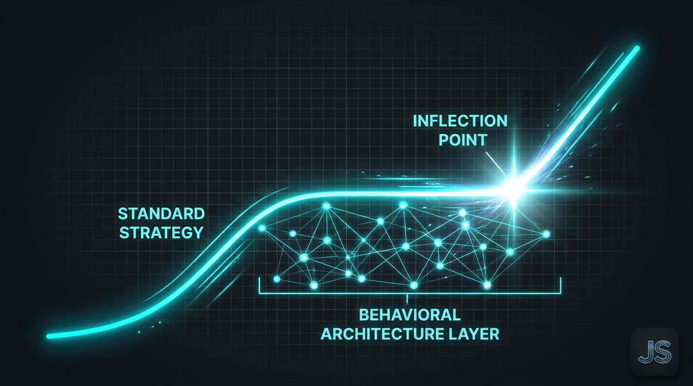
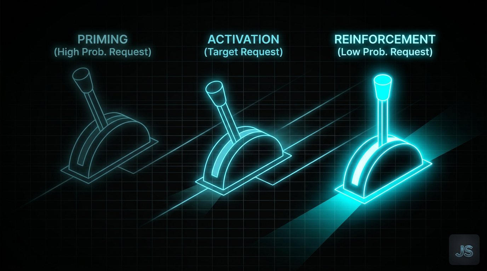

The Creative Shift June 16, 2026
The Invisible Advantage
What Behavioral Architecture Actually Does to Growth

Every growth strategy has a gap between what it promises and what it delivers.
Most teams fill that gap with more budget, more content, more optimization.
The teams that compound fill it with behavioral architecture.
THE GAP NOBODY AUDITS
When a campaign underperforms, the default diagnosis is execution. Wrong creative. Wrong targeting. Wrong timing.
Sometimes that is true.
More often, the problem is upstream. The campaign arrived at an audience that was not in the right cognitive state to act. The message asked for a decision the person was not ready to make. The path forward required more mental effort than the motivation available could support.
These are not creative problems. They are behavioral ones.
And they cannot be fixed with a better headline.
WHAT BEHAVIORAL ARCHITECTURE ACTUALLY IS
Behavioral architecture is the practice of designing the conditions under which decisions happen, before you design the message that asks for one.
It asks three questions before any campaign is built.
What cognitive state does this person need to be in to take the action we want? What friction exists between their current state and that action? What environmental or social signals can shift the probability of the desired behavior?
When you answer those questions first, the strategy changes. The creative changes. The channel selection changes. The sequence changes.
The output looks similar from the outside. The conversion rate is not similar.
THE INVISIBLE ADVANTAGE
The reason behavioral architecture is an advantage is that most competitors are not doing it.
Most teams are making decisions based on what performed well last quarter or what a competitor is running. That is optimization inside a fixed frame.
Behavioral architecture breaks the frame. It asks why something works at the cognitive level, which means it transfers across categories, audiences, and contexts in ways that best-practice imitation never can.
I have applied this across technology, healthcare, consumer brands, and nonprofit growth. The category changes. The human brain does not.
When you understand the underlying behavioral mechanics, you stop guessing and start engineering.

THE THREE LEVERS
Most behavioral influence at the campaign level operates across three levers.
The first is friction. Every unnecessary step, unclear path, or ambiguous call to action is costing conversion. Friction is invisible until you map it deliberately.
The second is social proof architecture. Not just testimonials. The specific placement, format, and timing of social signals relative to the decision moment. This is rarely optimized and almost always underperforming.
The third is commitment scaffolding. The sequence of micro-agreements that move a person from awareness to action without ever asking for too much at once. Most brands skip this entirely and wonder why their conversion funnel leaks at every stage.
These are designable. They are not accidental. And most brands are leaving significant conversion on the table because they treat them as afterthoughts.
WHAT THIS MEANS FOR AI-DRIVEN GROWTH
As AI takes over execution, the behavioral layer becomes more important, not less.
AI can optimize delivery. It can personalize at scale. It can test faster than any human team.
What it cannot do is define the behavioral intent behind the strategy. It cannot determine what cognitive state the audience needs to be in. It cannot identify the specific friction that is killing conversion before the data accumulates.
That is the human layer. And it is the only layer that creates durable advantage.
ONE FOR THE ROAD
The brands winning in 2026 are not the most automated. They are the most intentional about the behavioral logic underneath the automation.
If you are scaling a growth system and want the behavioral architecture mapped before the machine runs, that is the conversation I want to have. Reach out directly or reply here.
Want this kind of thinking on your brand?
The Creative Shift is the thinking behind the client work. Book a call, or read the original on LinkedIn.